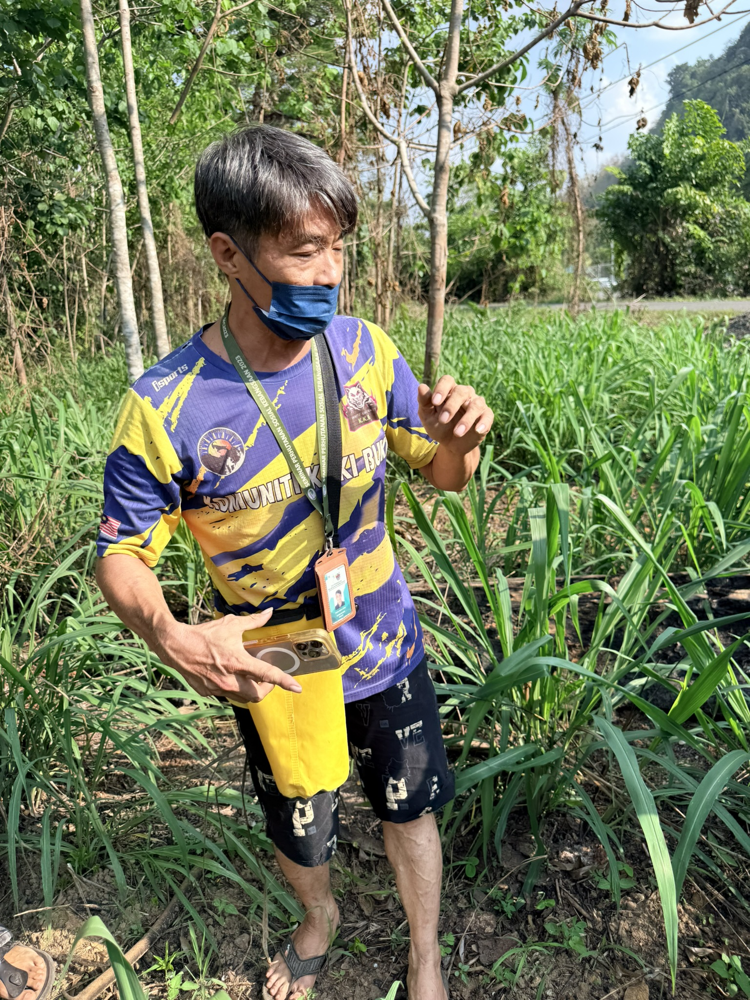
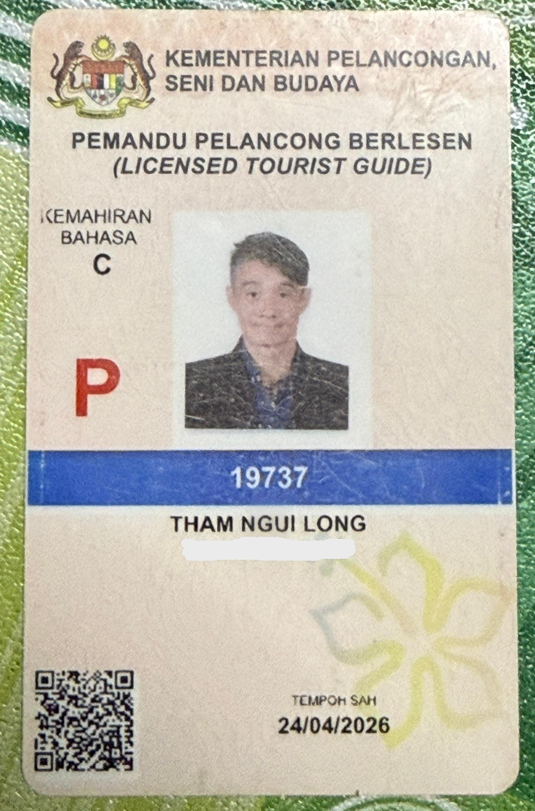
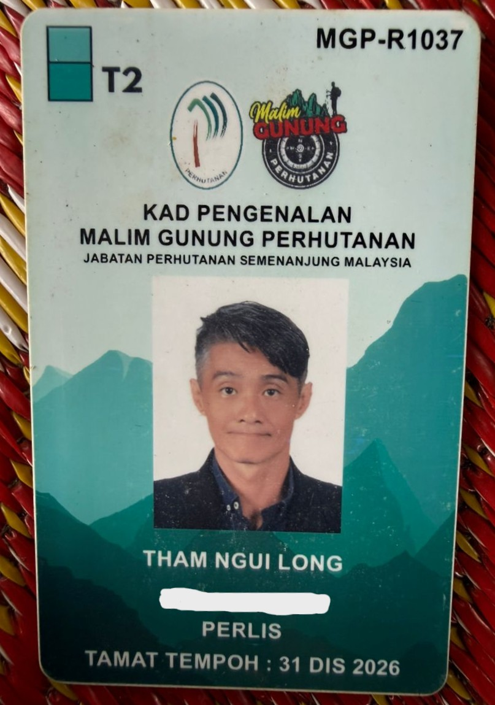
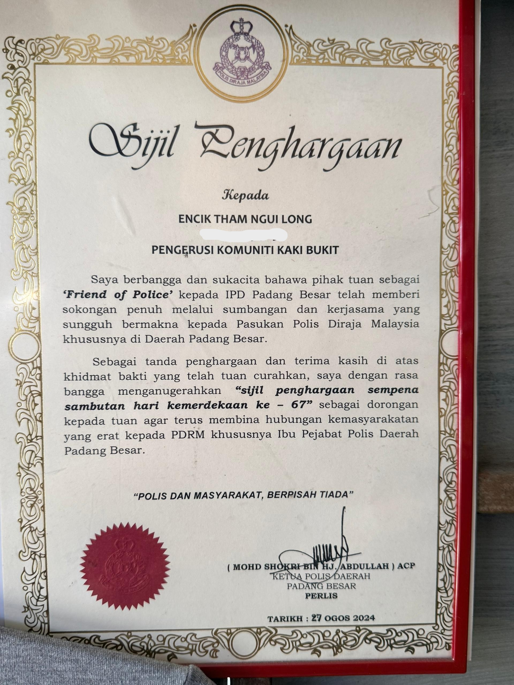
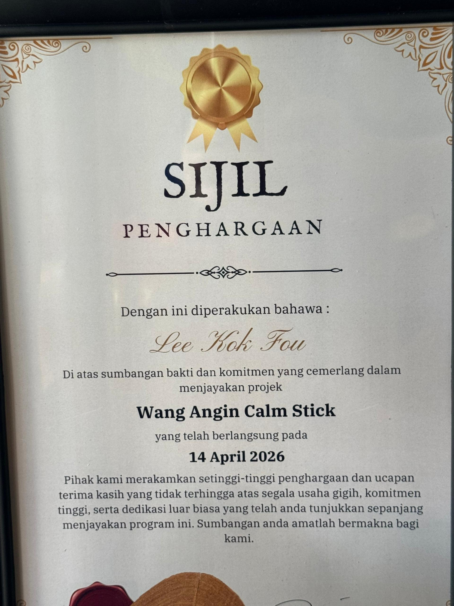
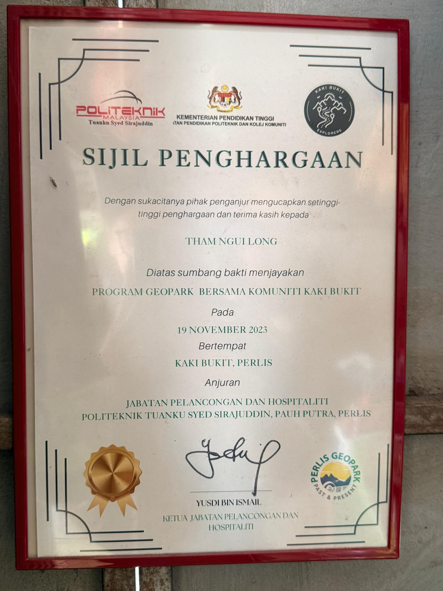
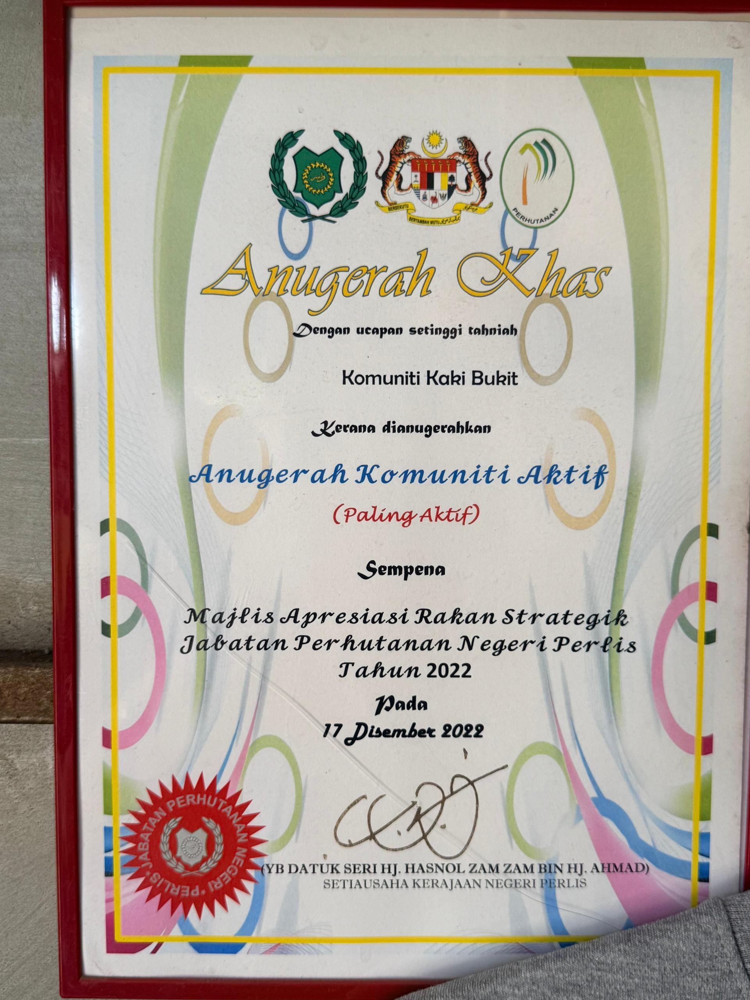
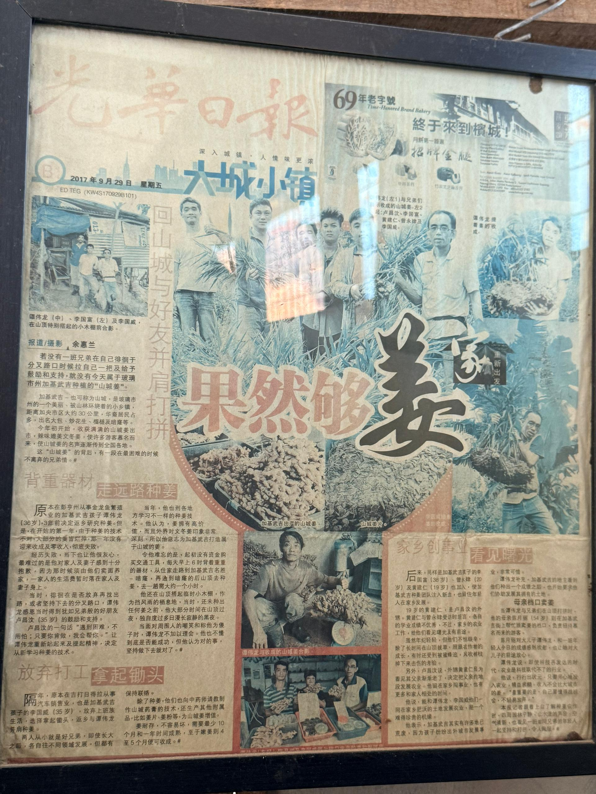
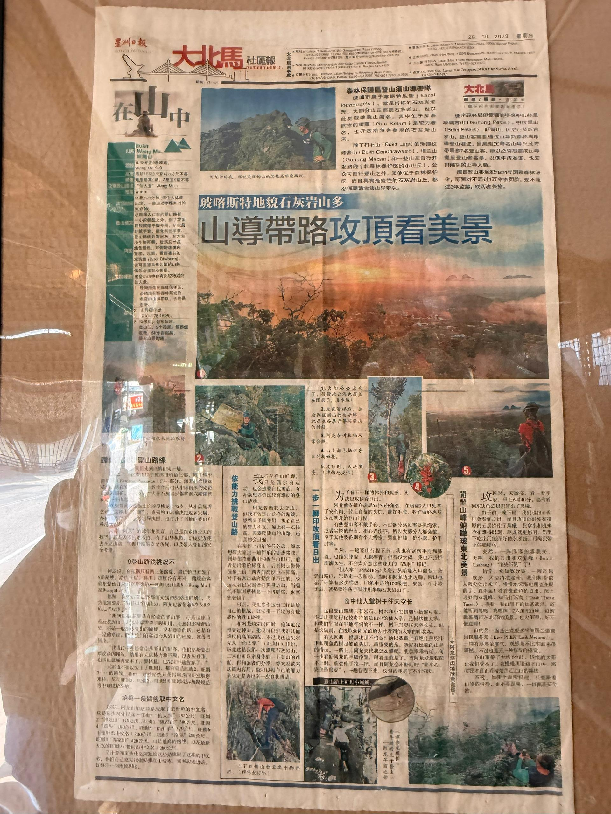

About Uncle Long
Name: Tham Ngui Long
Age: 45 years old
Birth: 25-12-1981
Location: Perlis, Malaysia

Name: Tham Ngui Long
Age: 45 years old
Birth: 25-12-1981
Location: Perlis, Malaysia
Uncle Long is a local resident of Perlis who has a deep passion for nature and tourism. He grew up near Gua Kelam and has strong familiarity with the cave.
He has more than 8 years of experience as a tour guide at Gua Kelam. He has guided many local and international tourists.
He is a licensed tour guide under the Ministry of Tourism Malaysia and holds MALIM Gunung certification.

Licensed Tourist Guide

MALIM Gunung Certification
Uncle Long has received various recognitions for his contribution to tourism in Perlis.





